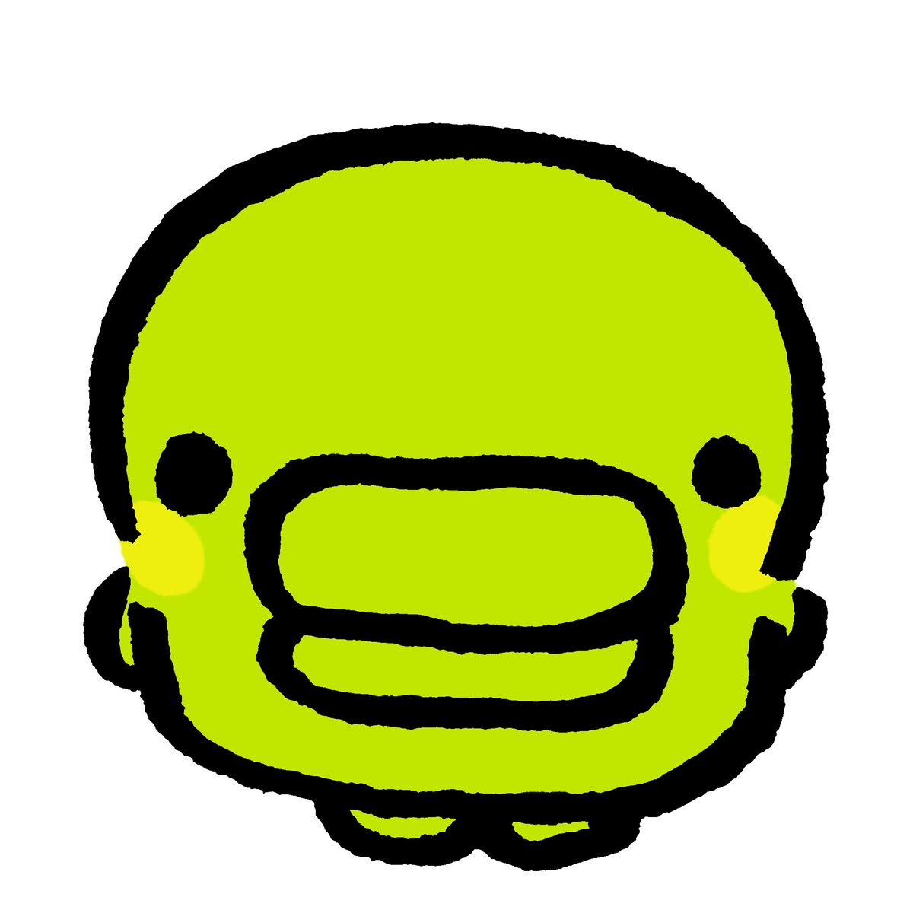

학사 - 미디어커뮤니케이션학과
OO대학교
시빅뉴스 기사 및 카드뉴스 게재
AI 영상 공모전 출품
영상 공모전 및 AI 이미지 공모전 출품
K-move 연수
"사용자의 시선으로 고민하고, 빠른 습득력과 실행력으로 성장하는 신입 개발자 예윤미입니다." 미디어 분야에서 쌓은 사용자 중심의 사고방식을 바탕으로, '사람들에게 진짜 필요한 서비스가 무엇인가'를 고민하며 개발을 시작했습니다. 기획의 의도를 명확히 이해하고 이를 화면과 기능으로 정교하게 구현해 내는 과정에서 개발에 큰 매력을 느끼고 있습니다. 입문 단계이지만, 최신 개발 도구와 AI 활용법을 적극적으로 익히며 탄탄한 기본기를 다지고 있습니다. 모르는 문제에 직면했을 때 빠르게 기술 문서를 탐색하고, 논리적인 문제 해결(Troubleshooting) 과정을 기록하며 끊임없이 학습합니다. 디테일을 놓치지 않는 꼼꼼함과 정해진 마감을 지켜내는 강한 책임감이 저의 가장 큰 무기입니다. 끊임없이 질문하고 배우는 겸손한 태도로, 팀에 빠르게 기여하는 유능한 동료로 성장하겠습니다.
"I am Ye Yun-mi, an entry-level developer who thinks from the user's perspective and grows through fast learning and strong execution." Building on the user-centered mindset I developed in the media field, I began coding by constantly asking, "What kind of service do people truly need?" I found a strong passion for development through the process of clearly understanding planning intentions and precisely translating them into user interfaces and core features. Although I am at the beginning of my journey, I am building a solid foundation by actively adopting modern development tools and AI techniques. When encountering unfamiliar issues, I swiftly search through technical documentation, document my logical troubleshooting process, and continuously learn. My greatest assets are my attention to detail and a strong sense of responsibility to strictly meet deadlines. With a humble attitude to always ask questions and learn, I will quickly grow into a capable teammate who contributes meaningfully to the team.
「ユーザー目線で思考し、素早い習得力と実行力で成長する新人エンジニアのイ・ユンミです。」メディア分野で培ったユーザー中心の思考をベースに、「人々にとって本当に必要なサービスとは何か」を追求しながら開発の世界に飛び込みました。企画の意図を正確に理解し、それを画面や機能として精巧に具現化していくプロセスに大きな魅力を感じています。入門段階ではありますが、最新の開発ツールやAI活用法を積極的に取り入れ、着実に基礎を固めています。未知の問題に直面した際も、迅速に技術ドキュメントを探求し、論理的な問題解決（Troubleshooting）の過程を記録しながら絶えず学習を続けています。細部まで妥協しない繊細さと、定められた納期（デッドライン）を厳守する強い責任感が私の最大の武器です。常に問いかけ学び続ける謙虚な姿勢で、チームに迅速に貢献できる有能な仲間へと成長してまいります。